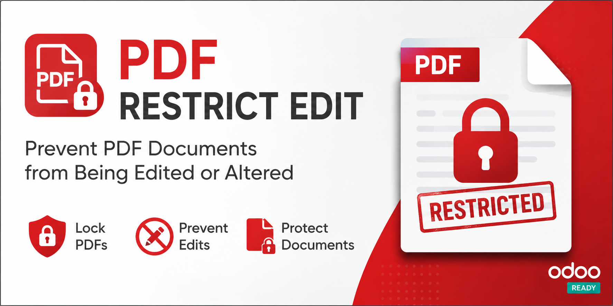

PDF Restrict Edit
This module adds password protection to generated PDF reports (invoices, quotations, delivery slips) without requiring a password to open the document. It prevents editing, copying content, and other modifications.
Features
- Automatically encrypts all PDF reports.
- No password required to open the PDF.
- Editing, copying, and assembling are prohibited.
- Configurable master password via menu: Settings → PDF Security.
- If no master password is set, a random password is generated for each PDF.
Screenshots

Usage
- Go to Settings → PDF Security.
- Enter your master password and save.
- Print any invoice, quotation, or delivery slip – the generated PDF will be protected.
Technical details
Uses pypdf (or PyPDF2) to encrypt PDFs with AES-128. Permissions: only low-resolution printing allowed.
Support
For issues or questions, contact: yogannnn@gmail.com